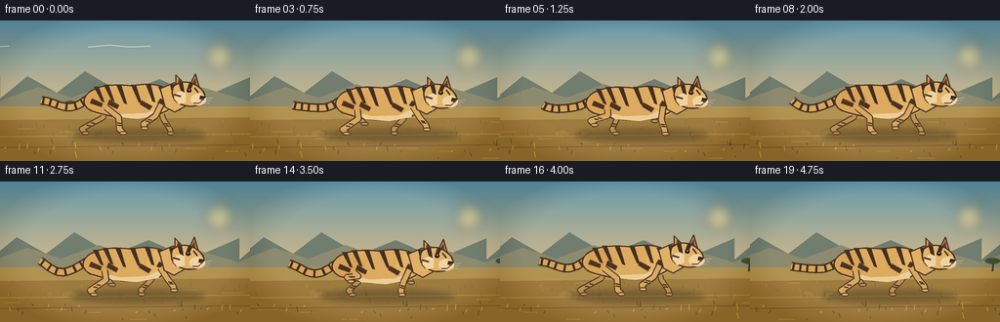
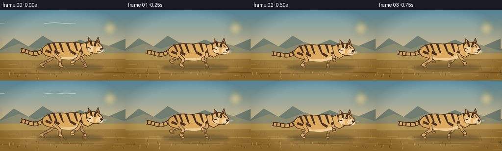

CODING AGENTS AS PIXEL WORLD MODELS
traex/GPT-5.6-Sol · instance_preservation_0007
点击播放 · 原生 RGB 像素
逐轮保存的候选
回放视频、检查图与代码变化。
每份候选均可单独播放。实际图片检查记录在下方工具轨迹中。
候选 01播放与检查图
点击播放 · 原生 RGB 像素

展开代码变化
--- 上一保存版本
+++ 本次保存版本
@@ -0,0 +1,237 @@
+from pathlib import Path
+import math
+import numpy as np
+from PIL import Image, ImageDraw, ImageFilter
+import artifact_io
+
+W,H,N = 256,144,20
+S=4
+TAU=math.tau
+
+def sp(p): return tuple(int(round(v*S)) for v in p)
+def sb(b): return tuple(int(round(v*S)) for v in b)
+
+def cubic(p0,p1,p2,p3,n=16):
+ pts=[]
+ for t in np.linspace(0,1,n):
+ u=1-t
+ pts.append((u**3*p0[0]+3*u*u*t*p1[0]+3*u*t*t*p2[0]+t**3*p3[0],
+ u**3*p0[1]+3*u*u*t*p1[1]+3*u*t*t*p2[1]+t**3*p3[1]))
+ return pts
+
+def poly(draw, pts, fill, outline=None, width=1):
+ draw.polygon([sp(p) for p in pts],fill=fill)
+ if outline: draw.line([sp(p) for p in pts+[pts[0]]],fill=outline,width=max(1,int(width*S)),joint='curve')
+def ell(draw,b,fill,outline=None,width=1): draw.ellipse(sb(b),fill=fill,outline=outline,width=max(1,int(width*S)))
+def line(draw,pts,fill,width,joint='curve'): draw.line([sp(p) for p in pts],fill=fill,width=max(1,int(width*S)),joint=joint)
+
+def gradient_bg():
+ a=np.array([104,154,173.]); b=np.array([242,193,125.])
+ arr=np.zeros((H*S,W*S,3),dtype=np.uint8)
+ for y in range(H*S):
+ t=y/(H*S-1); q=min(1,t*1.3)
+ col=(a*(1-q)+b*q)
+ arr[y,:,:]=col.astype(np.uint8)
+ return Image.fromarray(arr)
+
+def draw_background(im, k):
+ d=ImageDraw.Draw(im)
+ # softly glowing sun and haze
+ glow=Image.new('RGBA',im.size,(0,0,0,0)); gd=ImageDraw.Draw(glow)
+ gd.ellipse(sb((207,19,242,54)),fill=(255,214,119,22))
+ gd.ellipse(sb((216,28,233,45)),fill=(255,228,155,165))
+ im.alpha_composite(glow.filter(ImageFilter.GaussianBlur(6*S)))
+ d=ImageDraw.Draw(im)
+ # wispy clouds
+ cloud_shift=-(k*0.35)%320
+ for base in [-55,90,265]:
+ x=base+cloud_shift
+ line(d,[(x,27),(x+22,25),(x+43,27),(x+64,26)],(222,219,190,65),1.2)
+ # distant layered ridges, slow parallax
+ off=-(k*1.0)%256
+ for dx in (-256,0,256):
+ x=dx+off
+ poly(d,[(x,80),(x+28,57),(x+58,74),(x+87,52),(x+126,75),(x+163,60),(x+207,79),(x+256,58),(x+256,104),(x,104)],(112,125,111,255))
+ poly(d,[(x,82),(x+39,68),(x+73,79),(x+112,65),(x+152,80),(x+199,66),(x+256,83),(x+256,104),(x,104)],(141,139,111,255))
+ # plain
+ d.rectangle(sb((0,88,256,144)),fill=(178,147,82,255))
+ # distant tree silhouettes, wrapped
+ mid=-(k*2.2)%310
+ for base,sc in [(-20,.55),(72,.40),(184,.52),(276,.34)]:
+ x=base+mid
+ y=92
+ line(d,[(x,y),(x+1,y-17*sc)],(71,75,55,255),2.2*sc+1)
+ line(d,[(x+1,y-12*sc),(x-8*sc,y-19*sc)],(71,75,55,255),1.2)
+ line(d,[(x+1,y-13*sc),(x+10*sc,y-21*sc)],(71,75,55,255),1.2)
+ ell(d,(x-14*sc,y-25*sc,x+14*sc,y-14*sc),(73,84,57,255))
+ # horizontal ground bands and scrolling grass texture
+ poly(d,[(0,102),(256,99),(256,144),(0,144)],(158,124,63,255))
+ line(d,[(0,119),(256,116)],(189,151,77,255),1)
+ line(d,[(0,130),(256,127)],(128,97,52,160),1)
+ rng=np.random.default_rng(41)
+ ground_off=-(k*8.4)%300
+ for i in range(70):
+ x0=float(rng.uniform(-35,285))+ground_off
+ while x0 < -20: x0 += 300
+ while x0 > 276: x0 -= 300
+ y=float(rng.uniform(103,142)); h=float(rng.uniform(1,6)); sl=float(rng.uniform(-2,2))
+ col=(104,91,50,170) if i%3 else (218,172,86,155)
+ line(d,[(x0,y),(x0+sl,y-h)],col,.45 if y<125 else .75)
+ # speed streaks low on the plain
+ for j in range(8):
+ yy=104+j*5+(j%2)*2
+ xx=(j*43-k*13)%310-25
+ line(d,[(xx,yy),(xx+13+j%3*4,yy-.3)],(226,185,102,100),.7)
+
+def foot_path(p, hipx, kind):
+ # stance then airborne return, with species-appropriate reach
+ p%=1.0
+ if p < .52:
+ q=p/.52
+ x=hipx + (18*(1-q)-22*q)
+ y=116 + 0.8*math.sin(q*math.pi)
+ else:
+ q=(p-.52)/.48
+ x=hipx + (-22*(1-q)+18*q)
+ y=116-13*math.sin(q*math.pi)
+ return x,y
+
+def draw_leg(d, hip, p, near=True, front=False):
+ hx,hy=hip; fx,fy=foot_path(p,hx,'front' if front else 'hind')
+ # knees bend rearward for foreleg, forward/hock shape for hind
+ if front:
+ knee=(hx + .43*(fx-hx) - 3*math.sin(TAU*p), hy + .46*(fy-hy))
+ ankle=(fx-1.0, fy-5)
+ else:
+ knee=(hx + .42*(fx-hx)+6, hy + .38*(fy-hy))
+ ankle=(fx-4,fy-5)
+ coat=(190,145,82,255) if not near else (217,169,98,255)
+ edge=(78,58,42,255)
+ # outlined tapered visual via thick rounded paths
+ line(d,[hip,knee,ankle,(fx,fy-1)],edge,7.0 if near else 6.2)
+ line(d,[hip,knee,ankle,(fx,fy-1)],coat,4.8 if near else 4.1)
+ # leg bands
+ vx=ankle[0]-knee[0]; vy=ankle[1]-knee[1]
+ for r in (.48,.68):
+ cx=knee[0]+vx*r; cy=knee[1]+vy*r
+ line(d,[(cx-2.0,cy-.4),(cx+2.0,cy+.4)],(82,55,36,255),1.6)
+ ell(d,(fx-4,fy-2.8,fx+4,fy+1.2),coat,edge,1)
+
+def draw_tiger(im,k):
+ d=ImageDraw.Draw(im)
+ phase=(k/8.0)%1
+ bob=-2.2*math.cos(TAU*phase*2) # two contacts each cycle
+ xshift=2.0*math.sin(k*.33)
+ ox=xshift; oy=bob
+ def T(p): return (p[0]+ox,p[1]+oy)
+ # ground shadow
+ shadow=Image.new('RGBA',im.size,(0,0,0,0)); sd=ImageDraw.Draw(shadow)
+ ell(sd,(73+ox,111,211+ox,124),(45,35,25,90))
+ im.alpha_composite(shadow.filter(ImageFilter.GaussianBlur(3*S)))
+ d=ImageDraw.Draw(im)
+ # tail behind body: supple, striped, slightly waving
+ tail_pts=[]
+ for i in range(24):
+ t=i/23
+ x=96+ox-54*t
+ y=78+oy+6*t+10*math.sin(math.pi*t)+3*math.sin(TAU*(t+k/16))*t
+ tail_pts.append((x,y))
+ line(d,tail_pts,(68,48,34,255),9.0)
+ line(d,tail_pts,(214,165,92,255),6.4)
+ for t in [.22,.39,.56,.72,.86,.96]:
+ idx=min(22,int(t*23)); a=tail_pts[idx-1]; b=tail_pts[idx+1]
+ vx=b[0]-a[0];vy=b[1]-a[1]; L=max(1,math.hypot(vx,vy)); nx=-vy/L;ny=vx/L
+ c=tail_pts[idx]
+ line(d,[(c[0]-nx*3.2,c[1]-ny*3.2),(c[0]+nx*3.2,c[1]+ny*3.2)],(65,44,31,255),2.4)
+ # far legs, deliberately offset to make gallop readable
+ draw_leg(d,T((108,91)),phase+.50,near=False,front=False)
+ draw_leg(d,T((163,89)),phase+.08,near=False,front=True)
+ # body organic silhouette
+ body=[]
+ body += cubic(T((88,79)),T((97,67)),T((119,67)),T((135,69)),12)
+ body += cubic(T((135,69)),T((158,64)),T((174,70)),T((181,82)),12)[1:]
+ body += cubic(T((181,82)),T((177,94)),T((163,101)),T((145,101)),10)[1:]
+ body += cubic(T((145,101)),T((125,104)),T((107,99)),T((94,95)),10)[1:]
+ body += cubic(T((94,95)),T((86,91)),T((84,85)),T((88,79)),8)[1:]
+ poly(d,body,(220,171,96,255),(76,55,39,255),1.7)
+ # haunch and shoulder volume highlights
+ ell(d,(T((88,72))[0],T((88,72))[1],T((119,99))[0],T((119,99))[1]),(216,163,88,255))
+ ell(d,(T((151,70))[0],T((151,70))[1],T((178,98))[0],T((178,98))[1]),(226,179,104,255))
+ # re-outline back and belly to retain silhouette
+ line(d,body+[body[0]],(77,55,39,255),1.5)
+ # cream belly patch
+ belly=[T((105,94)),T((124,98)),T((150,97)),T((169,89)),T((163,99)),T((141,103)),T((116,101))]
+ poly(d,belly,(237,205,151,210))
+ # dorsal stripes: tapered wedges, stable anatomy
+ stripes=[(98,70,105,86),(108,68,115,85),(121,68,128,88),(136,68,143,87),(151,67,157,86),(164,70,170,88)]
+ for i,(x1,y1,x2,y2) in enumerate(stripes):
+ pts=[T((x1-2,y1)),T((x1+3,y1)),T((x2+2,y2)),T((x2-1,y2-1))]
+ poly(d,pts,(69,47,32,255))
+ # side chevrons
+ for pts in [[(94,82),(105,87),(104,91),(92,87)],[(112,83),(122,89),(120,93),(110,88)],[(145,84),(156,90),(153,94),(143,88)],[(164,82),(174,86),(172,91),(161,87)]]:
+ poly(d,[T(p) for p in pts],(77,51,32,245))
+ # near legs on top of torso edge
+ draw_leg(d,T((108,91)),phase,near=True,front=False)
+ draw_leg(d,T((165,88)),phase+.58,near=True,front=True)
+ # shoulder chest overlay/neck
+ neck=[T((164,72)),T((178,66)),T((192,70)),T((193,88)),T((179,96)),T((169,91))]
+ poly(d,neck,(224,176,102,255),(76,54,38,255),1.3)
+ # neck stripes
+ poly(d,[T((174,68)),T((179,67)),T((182,82)),T((178,84))],(69,47,32,255))
+ poly(d,[T((184,68)),T((188,70)),T((188,83)),T((184,82))],(69,47,32,255))
+ # ears behind head
+ poly(d,[T((180,70)),T((180,58)),T((189,67))],(212,154,86,255),(70,49,35,255),1.3)
+ poly(d,[T((195,67)),T((200,57)),T((204,71))],(210,153,85,255),(70,49,35,255),1.3)
+ poly(d,[T((182,67)),T((183,61)),T((187,67))],(93,60,48,255))
+ poly(d,[T((197,66)),T((200,61)),T((201,68))],(93,60,48,255))
+ # head profile
+ head=[]
+ head += cubic(T((178,69)),T((185,63)),T((198,64)),T((204,71)),8)
+ head += cubic(T((204,71)),T((209,74)),T((212,81)),T((207,86)),8)[1:]
+ head += cubic(T((207,86)),T((201,92)),T((189,91)),T((181,86)),8)[1:]
+ head += cubic(T((181,86)),T((176,81)),T((175,74)),T((178,69)),8)[1:]
+ poly(d,head,(226,179,106,255),(72,51,37,255),1.5)
+ # face light areas and muzzle
+ poly(d,[T((181,76)),T((190,73)),T((190,86)),T((183,88)),T((178,82))],(241,211,162,255))
+ ell(d,(T((195,77))[0],T((195,77))[1],T((211,89))[0],T((211,89))[1]),(241,211,160,255))
+ # facial stripes/brow
+ poly(d,[T((183,67)),T((187,66)),T((189,76)),T((185,74))],(67,45,32,255))
+ poly(d,[T((194,65)),T((198,67)),T((194,75)),T((191,74))],(67,45,32,255))
+ line(d,[T((178,78)),T((185,80))],(72,48,32,255),1.8)
+ line(d,[T((199,71)),T((203,76))],(72,48,32,255),1.8)
+ # eye, brow glint
+ ell(d,(T((191,72))[0],T((191,72))[1],T((196,76))[0],T((196,76))[1]),(44,32,24,255))
+ ell(d,(T((193,72.5))[0],T((193,72.5))[1],T((194.2,73.7))[0],T((194.2,73.7))[1]),(245,211,121,255))
+ # nose, mouth, whiskers
+ poly(d,[T((205,79)),T((211,80)),T((208,84)),T((204,83))],(55,38,34,255))
+ line(d,[T((207,84)),T((204,87)),T((198,87))],(78,45,37,255),1)
+ for dy,endx in [(0,218),(2,216),(4,214)]:
+ line(d,[T((204,83+dy)),T((endx,81+dy*1.4))],(244,226,189,210),.55)
+ # small claws only at strong extension
+ # airborne dust behind paws (screen anchored / dissipating)
+ dust=Image.new('RGBA',im.size,(0,0,0,0)); dd=ImageDraw.Draw(dust)
+ for j in range(5):
+ age=(k+j*3)%12
+ xx=84-age*3+j*4; yy=116-j%2*2
+ r=1.5+age*.25
+ ell(dd,(xx-r,yy-r,xx+r,yy+r),(218,177,106,max(0,80-age*5)))
+ im.alpha_composite(dust.filter(ImageFilter.GaussianBlur(1.5*S)))
+
+def make_frame(k):
+ im=gradient_bg().convert('RGBA')
+ draw_background(im,k)
+ draw_tiger(im,k)
+ # subtle cinematic vignette
+ yy,xx=np.mgrid[0:H*S,0:W*S]
+ nx=(xx-W*S/2)/(W*S/2); ny=(yy-H*S/2)/(H*S/2)
+ v=np.clip((nx*nx+ny*ny-.65)*35,0,23).astype(np.uint8)
+ arr=np.array(im.convert('RGB')).astype(np.int16)
+ arr=np.clip(arr-v[...,None],0,255).astype(np.uint8)
+ out=Image.fromarray(arr).resize((W,H),Image.Resampling.LANCZOS)
+ return np.asarray(out,dtype=np.uint8)
+
+def main():
+ frames=np.stack([make_frame(k) for k in range(N)])
+ artifact_io.save(frames,Path(__file__).resolve().parent)
+
+if __name__=='__main__': main()
可观测工具轨迹
实际执行的命令与返回图片。
命令 1exit 0
/bin/bash -lc "cat prompt.txt && printf '\\n---RULES---\\n' && cat GENERATION_RULES.md && printf '\\n---SPEC---\\n' && cat task_spec.json"
命令 2exit 0
/bin/bash -lc "find . -maxdepth 2 -type f -printf '%p\\n' | sort"
命令 3exit 0
/bin/bash -lc 'cat artifact_io.py'
命令 4exit 0
/bin/bash -lc "cat > generate.py <<'PY'
from pathlib import Path
import math
import numpy as np
from PIL import Image, ImageDraw, ImageFilter
import artifact_io
W,H,N = 256,144,20
S=4
TAU=math.tau
def sp(p): return tuple(int(round(v*S)) for v in p)
def sb(b): return tuple(int(round(v*S)) for v in b)
def cubic(p0,p1,p2,p3,n=16):
pts=[]
for t in np.linspace(0,1,n):
u=1-t
pts.append((u**3*p0[0]+3*u*u*t*p1[0]+3*u*t*t*p2[0]+t**3*p3[0],
u**3*p0[1]+3*u*u*t*p1[1]+3*u*t*t*p2[1]+t**3*p3[1]))
return pts
def poly(draw, pts, fill, outline=None, width=1):
draw.polygon([sp(p) for p in pts],fill=fill)
if outline: draw.line([sp(p) for p in pts+[pts[0]]],fill=outline,width=max(1,int(width*S)),joint='curve')
def ell(draw,b,fill,outline=None,width=1): draw.ellipse(sb(b),fill=fill,outline=outline,width=max(1,int(width*S)))
def line(draw,pts,fill,width,joint='curve'): draw.line([sp(p) for p in pts],fill=fill,width=max(1,int(width*S)),joint=joint)
def gradient_bg():
a=np.array([104,154,173.]); b=np.array([242,193,125.])
arr=np.zeros((H*S,W*S,3),dtype=np.uint8)
for y in range(H*S):
t=y/(H*S-1); q=min(1,t*1.3)
col=(a*(1-q)+b*q)
arr[y,:,:]=col.astype(np.uint8)
return Image.fromarray(arr)
def draw_background(im, k):
d=ImageDraw.Draw(im)
# softly glowing sun and haze
glow=Image.new('RGBA',im.size,(0,0,0,0)); gd=ImageDraw.Draw(glow)
gd.ellipse(sb((207,19,242,54)),fill=(255,214,119,22))
gd.ellipse(sb((216,28,233,45)),fill=(255,228,155,165))
im.alpha_composite(glow.filter(ImageFilter.GaussianBlur(6*S)))
d=ImageDraw.Draw(im)
# wispy clouds
cloud_shift=-(k*0.35)%320
for base in [-55,90,265]:
x=base+cloud_shift
line(d,[(x,27),(x+22,25),(x+43,27),(x+64,26)],(222,219,190,65),1.2)
# distant layered ridges, slow parallax
off=-(k*1.0)%256
for dx in (-256,0,256):
x=dx+off
poly(d,[(x,80),(x+28,57),(x+58,74),(x+87,52),(x+126,75),(x+163,60),(x+207,79),(x+256,58),(x+256,104),(x,104)],(112,125,111,255))
poly(d,[(x,82),(x+39,68),(x+73,79),(x+112,65),(x+152,80),(x+199,66),(x+256,83),(x+256,104),(x,104)],(141,139,111,255))
# plain
d.rectangle(sb((0,88,256,144)),fill=(178,147,82,255))
# distant tree silhouettes, wrapped
mid=-(k*2.2)%310
for base,sc in [(-20,.55),(72,.40),(184,.52),(276,.34)]:
x=base+mid
y=92
line(d,[(x,y),(x+1,y-17*sc)],(71,75,55,255),2.2*sc+1)
line(d,[(x+1,y-12*sc),(x-8*sc,y-19*sc)],(71,75,55,255),1.2)
line(d,[(x+1,y-13*sc),(x+10*sc,y-21*sc)],(71,75,55,255),1.2)
ell(d,(x-14*sc,y-25*sc,x+14*sc,y-14*sc),(73,84,57,255))
# horizontal ground bands and scrolling grass texture
poly(d,[(0,102),(256,99),(256,144),(0,144)],(158,124,63,255))
line(d,[(0,119),(256,116)],(189,151,77,255),1)
line(d,[(0,130),(256,127)],(128,97,52,160),1)
rng=np.random.default_rng(41)
ground_off=-(k*8.4)%300
for i in range(70):
x0=float(rng.uniform(-35,285))+ground_off
while x0 < -20: x0 += 300
while x0 > 276: x0 -= 300
y=float(rng.uniform(103,142)); h=float(rng.uniform(1,6)); sl=float(rng.uniform(-2,2))
col=(104,91,50,170) if i%3 else (218,172,86,155)
line(d,[(x0,y),(x0+sl,y-h)],col,.45 if y<125 else .75)
# speed streaks low on the plain
for j in range(8):
yy=104+j*5+(j%2)*2
xx=(j*43-k*13)%310-25
line(d,[(xx,yy),(xx+13+j%3*4,yy-.3)],(226,185,102,100),.7)
def foot_path(p, hipx, kind):
# stance then airborne return, with species-appropriate reach
p%=1.0
if p < .52:
q=p/.52
x=hipx + (18*(1-q)-22*q)
y=116 + 0.8*math.sin(q*math.pi)
else:
q=(p-.52)/.48
x=hipx + (-22*(1-q)+18*q)
y=116-13*math.sin(q*math.pi)
return x,y
def draw_leg(d, hip, p, near=True, front=False):
hx,hy=hip; fx,fy=foot_path(p,hx,'front' if front else 'hind')
# knees bend rearward for foreleg, forward/hock shape for hind
if front:
knee=(hx + .43*(fx-hx) - 3*math.sin(TAU*p), hy + .46*(fy-hy))
ankle=(fx-1.0, fy-5)
else:
knee=(hx + .42*(fx-hx)+6, hy + .38*(fy-hy))
ankle=(fx-4,fy-5)
coat=(190,145,82,255) if not near else (217,169,98,255)
edge=(78,58,42,255)
# outlined tapered visual via thick rounded paths
line(d,[hip,knee,ankle,(fx,fy-1)],edge,7.0 if near else 6.2)
line(d,[hip,knee,ankle,(fx,fy-1)],coat,4.8 if near else 4.1)
# leg bands
vx=ankle[0]-knee[0]; vy=ankle[1]-knee[1]
for r in (.48,.68):
cx=knee[0]+vx*r; cy=knee[1]+vy*r
line(d,[(cx-2.0,cy-.4),(cx+2.0,cy+.4)],(82,55,36,255),1.6)
ell(d,(fx-4,fy-2.8,fx+4,fy+1.2),coat,edge,1)
def draw_tiger(im,k):
d=ImageDraw.Draw(im)
phase=(k/8.0)%1
bob=-2.2*math.cos(TAU*phase*2) # two contacts each cycle
xshift=2.0*math.sin(k*.33)
ox=xshift; oy=bob
def T(p): return (p[0]+ox,p[1]+oy)
# ground shadow
shadow=Image.new('RGBA',im.size,(0,0,0,0)); sd=ImageDraw.Draw(shadow)
ell(sd,(73+ox,111,211+ox,124),(45,35,25,90))
im.alpha_composite(shadow.filter(ImageFilter.GaussianBlur(3*S)))
d=ImageDraw.Draw(im)
# tail behind body: supple, striped, slightly waving
tail_pts=[]
for i in range(24):
t=i/23
x=96+ox-54*t
y=78+oy+6*t+10*math.sin(math.pi*t)+3*math.sin(TAU*(t+k/16))*t
tail_pts.append((x,y))
line(d,tail_pts,(68,48,34,255),9.0)
line(d,tail_pts,(214,165,92,255),6.4)
for t in [.22,.39,.56,.72,.86,.96]:
idx=min(22,int(t*23)); a=tail_pts[idx-1]; b=tail_pts[idx+1]
vx=b[0]-a[0];vy=b[1]-a[1]; L=max(1,math.hypot(vx,vy)); nx=-vy/L;ny=vx/L
c=tail_pts[idx]
line(d,[(c[0]-nx*3.2,c[1]-ny*3.2),(c[0]+nx*3.2,c[1]+ny*3.2)],(65,44,31,255),2.4)
# far legs, deliberately offset to make gallop readable
draw_leg(d,T((108,91)),phase+.50,near=False,front=False)
draw_leg(d,T((163,89)),phase+.08,near=False,front=True)
# body organic silhouette
body=[]
body += cubic(T((88,79)),T((97,67)),T((119,67)),T((135,69)),12)
body += cubic(T((135,69)),T((158,64)),T((174,70)),T((181,82)),12)[1:]
body += cubic(T((181,82)),T((177,94)),T((163,101)),T((145,101)),10)[1:]
body += cubic(T((145,101)),T((125,104)),T((107,99)),T((94,95)),10)[1:]
body += cubic(T((94,95)),T((86,91)),T((84,85)),T((88,79)),8)[1:]
poly(d,body,(220,171,96,255),(76,55,39,255),1.7)
# haunch and shoulder volume highlights
ell(d,(T((88,72))[0],T((88,72))[1],T((119,99))[0],T((119,99))[1]),(216,163,88,255))
ell(d,(T((151,70))[0],T((151,70))[1],T((178,98))[0],T((178,98))[1]),(226,179,104,255))
# re-outline back and belly to retain silhouette
line(d,body+[body[0]],(77,55,39,255),1.5)
# cream belly patch
belly=[T((105,94)),T((124,98)),T((150,97)),T((169,89)),T((163,99)),T((141,103)),T((116,101))]
poly(d,belly,(237,205,151,210))
# dorsal stripes: tapered wedges, stable anatomy
stripes=[(98,70,105,86),(108,68,115,85),(121,68,128,88),(136,68,143,87),(151,67,157,86),(164,70,170,88)]
for i,(x1,y1,x2,y2) in enumerate(stripes):
pts=[T((x1-2,y1)),T((x1+3,y1)),T((x2+2,y2)),T((x2-1,y2-1))]
poly(d,pts,(69,47,32,255))
# side chevrons
for pts in [[(94,82),(105,87),(104,91),(92,87)],[(112,83),(122,89),(120,93),(110,88)],[(145,84),(156,90),(153,94),(143,88)],[(164,82),(174,86),(172,91),(161,87)]]:
poly(d,[T(p) for p in pts],(77,51,32,245))
# near legs on top of torso edge
draw_leg(d,T((108,91)),phase,near=True,front=False)
draw_leg(d,T((165,88)),phase+.58,near=True,front=True)
# shoulder chest overlay/neck
neck=[T((164,72)),T((178,66)),T((192,70)),T((193,88)),T((179,96)),T((169,91))]
poly(d,neck,(224,176,102,255),(76,54,38,255),1.3)
# neck stripes
poly(d,[T((174,68)),T((179,67)),T((182,82)),T((178,84))],(69,47,32,255))
poly(d,[T((184,68)),T((188,70)),T((188,83)),T((184,82))],(69,47,32,255))
# ears behind head
poly(d,[T((180,70)),T((180,58)),T((189,67))],(212,154,86,255),(70,49,35,255),1.3)
poly(d,[T((195,67)),T((200,57)),T((204,71))],(210,153,85,255),(70,49,35,255),1.3)
poly(d,[T((182,67)),T((183,61)),T((187,67))],(93,60,48,255))
poly(d,[T((197,66)),T((200,61)),T((201,68))],(93,60,48,255))
# head profile
head=[]
head += cubic(T((178,69)),T((185,63)),T((198,64)),T((204,71)),8)
head += cubic(T((204,71)),T((209,74)),T((212,81)),T((207,86)),8)[1:]
head += cubic(T((207,86)),T((201,92)),T((189,91)),T((181,86)),8)[1:]
head += cubic(T((181,86)),T((176,81)),T((175,74)),T((178,69)),8)[1:]
poly(d,head,(226,179,106,255),(72,51,37,255),1.5)
# face light areas and muzzle
poly(d,[T((181,76)),T((190,73)),T((190,86)),T((183,88)),T((178,82))],(241,211,162,255))
ell(d,(T((195,77))[0],T((195,77))[1],T((211,89))[0],T((211,89))[1]),(241,211,160,255))
# facial stripes/brow
poly(d,[T((183,67)),T((187,66)),T((189,76)),T((185,74))],(67,45,32,255))
poly(d,[T((194,65)),T((198,67)),T((194,75)),T((191,74))],(67,45,32,255))
line(d,[T((178,78)),T((185,80))],(72,48,32,255),1.8)
line(d,[T((199,71)),T((203,76))],(72,48,32,255),1.8)
# eye, brow glint
ell(d,(T((191,72))[0],T((191,72))[1],T((196,76))[0],T((196,76))[1]),(44,32,24,255))
ell(d,(T((193,72.5))[0],T((193,72.5))[1],T((194.2,73.7))[0],T((194.2,73.7))[1]),(245,211,121,255))
# nose, mouth, whiskers
poly(d,[T((205,79)),T((211,80)),T((208,84)),T((204,83))],(55,38,34,255))
line(d,[T((207,84)),T((204,87)),T((198,87))],(78,45,37,255),1)
for dy,endx in [(0,218),(2,216),(4,214)]:
line(d,[T((204,83+dy)),T((endx,81+dy*1.4))],(244,226,189,210),.55)
# small claws only at strong extension
# airborne dust behind paws (screen anchored / dissipating)
dust=Image.new('RGBA',im.size,(0,0,0,0)); dd=ImageDraw.Draw(dust)
for j in range(5):
age=(k+j*3)%12
xx=84-age*3+j*4; yy=116-j%2*2
r=1.5+age*.25
ell(dd,(xx-r,yy-r,xx+r,yy+r),(218,177,106,max(0,80-age*5)))
im.alpha_composite(dust.filter(ImageFilter.GaussianBlur(1.5*S)))
def make_frame(k):
im=gradient_bg().convert('RGBA')
draw_background(im,k)
draw_tiger(im,k)
# subtle cinematic vignette
yy,xx=np.mgrid[0:H*S,0:W*S]
nx=(xx-W*S/2)/(W*S/2); ny=(yy-H*S/2)/(H*S/2)
v=np.clip((nx*nx+ny*ny-.65)*35,0,23).astype(np.uint8)
arr=np.array(im.convert('RGB')).astype(np.int16)
arr=np.clip(arr-v[...,None],0,255).astype(np.uint8)
out=Image.fromarray(arr).resize((W,H),Image.Resampling.LANCZOS)
return np.asarray(out,dtype=np.uint8)
def main():
frames=np.stack([make_frame(k) for k in range(N)])
artifact_io.save(frames,Path(__file__).resolve().parent)
if __name__=='__main__': main()
PY
python generate.py
ls -l pixels.npz inspection.png index.html frames/00.png"命令 5exit 0
/bin/bash -lc "python - <<'PY'
import numpy as np
z=np.load('pixels.npz')['pixels']
print('pixels', z.shape, z.dtype, 'frames', len(list(__import__('pathlib').Path('frames').glob('*.png'))))
# quantify motion and color channels in decoded frames
p=z.transpose(2,0,1)
print('changed pixels/frame mean', int(np.mean([np.count_nonzero(p[i]"'!=p[i-1]) for i in range(1,len(p))])))
PY'视觉工具实际返回图片 1

视觉工具实际返回图片 2

保存候选 1 份；完成命令 5 次；可验证图片返回 2 张。原始 API 响应与完整日志保留在本地。